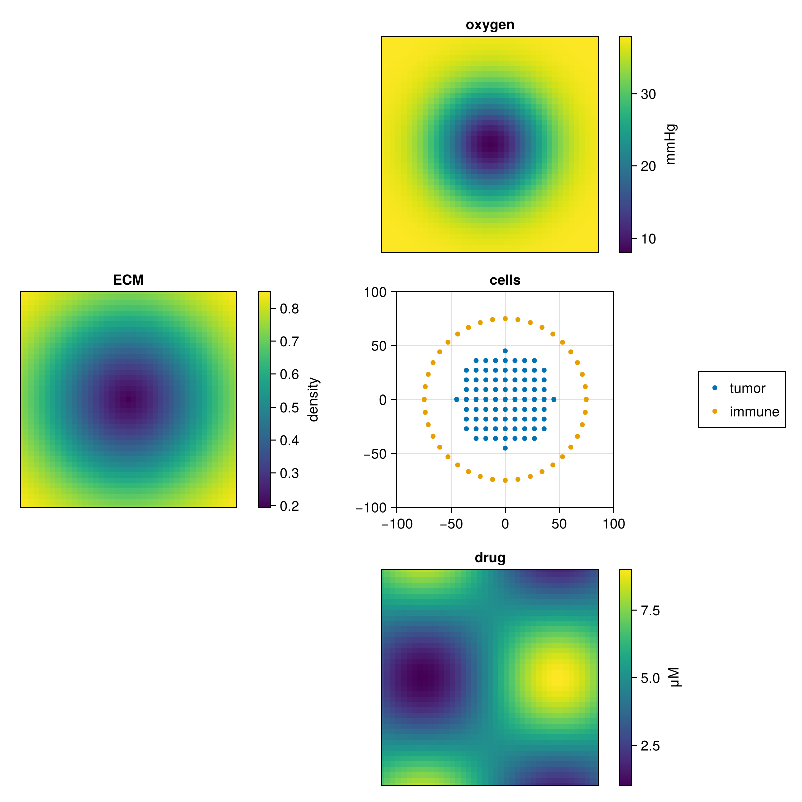

Tableau
tableau composes one state as a focal panel surrounded by satellite panels — the verb for showing how the heterogeneous parts of a single state relate spatially.
Where montage and storyboard stitch pictures that already exist, tableau re-plots from data. That is what buys real heatmaps, real colorbars and one spatial extent shared by every panel, and it is why the verb needs CairoMakie.
The methods appear as soon as CairoMakie is loaded alongside Montage; until then, calling tableau errors with exactly that hint. CairoMakie is a weak dependency, so its load time falls only on the people who ask for this verb — see Extensions.
using CairoMakie, MontageThe other two verbs stitch existing SVGs, which cannot give real heatmaps, real colorbars or a shared spatial extent. Rejected forcing tableau into the SVG backend to keep it in the core; it would have produced a picture that looked like a tableau without the axes actually agreeing. CairoMakie stays a weak dependency, so the cost lands only on people who ask for this verb.
The generic form
tableau(focal, satellites) takes axis callbacks, not data: focal is ax -> …, and each satellite is ax -> plot. Every satellite callback must return the plot it drew — that returned object is what its colorbar reads.
Callbacks rather than arrays, because the verb owns the layout and nothing else. A focal panel is whatever you can draw into a Makie Axis — a scatter, a contour, a rasterized image — and a satellite is any plot a Colorbar accepts, so there is no data shape for the generic method to know about. The methods that do take data, for PhysiCell output, are built on top of this one by writing the callbacks for you.
satellite_titles and colorbar_labels run parallel to satellites: entry i labels panel i, and a short vector simply leaves the later panels unlabelled. xlims and ylims are given once and applied to every axis, focal and satellite alike, so a feature at a given coordinate sits at the same place in all of them — the whole point of the arrangement. Both must be given for either to take effect. size is the figure size in Makie's device-independent pixels, (1000, 1000) by default.
function cells(ax)
scatter!(ax, tumor; label = "tumor", markersize = 7)
scatter!(ax, immune; label = "immune", markersize = 7)
end
tableau(cells,
[ax -> heatmap!(ax, xs, ys, oxygen),
ax -> heatmap!(ax, xs, ys, drug),
ax -> heatmap!(ax, xs, ys, ecm)];
focal_title = "cells",
satellite_titles = ["oxygen", "drug", "ECM"],
colorbar_labels = ["mmHg", "μM", "density"],
xlims = (-100, 100), ylims = (-100, 100),
size = (800, 800),
output = nothing)
Where things land
Satellites ring the centred focal panel in a fixed order: north, south, west, east, then the four corners. Past eight satellites the ring gives way to a square grid with the focal panel in the middle of it.
Satellite axes have their decorations hidden. They share the focal panel's extent, so their ticks would restate the focal panel's three to eight times over; the focal axis keeps its ticks and carries the coordinates for the whole figure.
The legend is built from the labelled plots on the focal axis, so give each focal series a label and leave the satellites alone — their key is the colorbar beside them.
legend | where the legend goes |
|---|---|
:auto (default) | the empty grid cell nearest the focal panel, costing no space; an in-axis corner when the grid is full |
a Symbol (:rt, :lb, …) | that corner, inside the focal axis, on an opaque background |
(row, col) | that grid cell — warns if it collides with the focal panel or a satellite |
nothing | no legend |
A colorbar on the focal panel
focal_colorbar_label gives the focal panel a colorbar of its own, for a focal plot whose colour encodes a continuous value rather than discrete categories.
The focal panel then moves into the same axis-plus-colorbar cell the satellites use, and the focal callback must return its plot — the convention the satellites already follow. Such a plot carries no labelled series for a legend to read, so pass legend=nothing alongside it.
tableau(ax -> scatter!(ax, positions; color = pressure, colormap = :plasma),
[ax -> heatmap!(ax, xs, ys, oxygen)];
focal_colorbar_label = "pressure", legend = nothing,
satellite_titles = ["oxygen"], output = "scene.pdf")Output and file formats
tableau writes tableau.png and returns that path; output=nothing returns the Makie Figure instead. Writing errors if the file already exists unless you pass overwrite=true.
The file extension on output picks the format — CairoMakie renders .png, .pdf and .svg, so a publication-ready vector figure is just a different filename. One cell layer (511 cells) plus a single 50×50 voxel substrate comes out very differently in the three:
| format | size | notes |
|---|---|---|
.png | 154 KB | raster; the default, best for exploring |
.pdf | 52 KB | vector, stream-compressed, and the smallest of the three — the publication choice |
.svg | 739 KB | vector, but uncompressed text, so much the largest |
Two things are worth knowing before reaching for .svg. CairoMakie's SVG contains no <text> elements at all — every label is emitted as glyph outlines, so an axis label cannot be retyped in Illustrator. (montage and storyboard stitch rather than render, and do emit real <text>, so their titles and legends stay editable; that is the path to take when editable text is the requirement.) And a heatmap becomes one path per voxel: roughly 2500 of them for a 50×50 grid, which is where the bulk of that 739 KB is, so a finer mesh inflates the file faster than more cells do.
A tableau movie needs a video container, and asking for .svg there fails in Makie's recorder rather than quietly producing something odd.
Measured one cell layer plus a 50x50 substrate at 154 KB (.png), 52 KB (.pdf) and 739 KB (.svg). PDF is vector AND stream-compressed, so it is the smallest of the three — the opposite of the "vector costs you size" caveat that was going to be written. The SVG bulk is ~2500 heatmap paths, not the cell scatter, so a finer mesh inflates it faster than more cells do.
From a simulation
Loading PhysiCellOutput or PhysiCellModelManager adds methods that build the callbacks for you from a snapshot's cells and substrates, along with keywords for choosing which cells appear and what their colour means — substrates, color, color_mode, cell_colormap, cell_types and include_dead. Those are documented in PhysiCell simulations.
using CairoMakie, PhysiCellModelManager, Montage
tableau(Simulation, 1; output = "figure.pdf")Animating
A tableau is a movie when its index covers several timepoints: the layout above is built once and the whole scene is stepped through Makie.record, with the plotting callbacks drawing Observables that the record loop updates per frame. You reach it through a data source rather than through the generic method — see Movies.
tableau(Simulation, 1; index = :all, output = "scene.mp4")